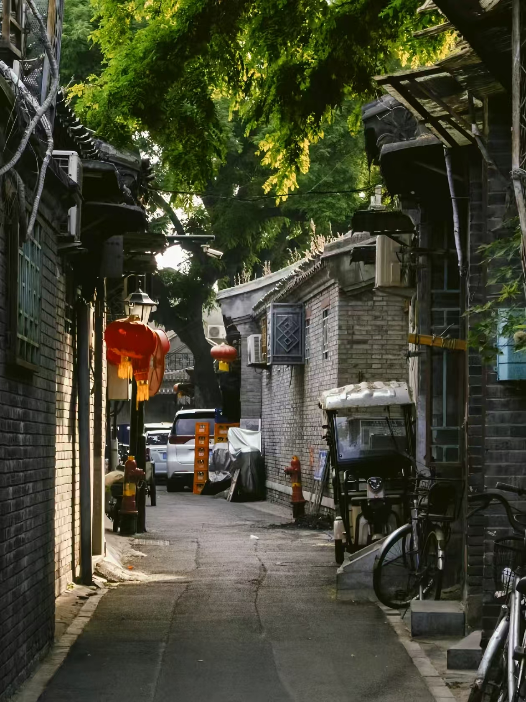

胡同和四合院是北京特有的民居形式，是老北京文化的载体。"胡同"一词来自蒙古语，意思是"水井"，因为有井的地方就有人居住，慢慢就形成了胡同。北京的胡同形成于元代，明清时期发展成熟，最多的时候有6000多条胡同，星罗棋布，组成了北京城的血脉。
四合院是北京传统的住宅形式，所谓"四合"，就是一个院子四面都建有房屋，北房、南房、东厢房、西厢房，合起来就是四合院。四合院讲究坐北朝南，北房是正房，是长辈住的，东西厢房是晚辈住的，南房是客房或书房，中间是院子，种着石榴树、海棠树，摆着鱼缸，充满了生活气息。
北京的胡同名字也很有意思，有的以人名命名，比如文丞相胡同；有的以市场命名，比如米市胡同、煤市街；有的以形状命名，比如烟袋斜街、耳朵眼胡同；还有的很接地气，比如帽儿胡同、雨儿胡同、菊儿胡同。现在北京还保留着不少老胡同，比如南锣鼓巷、烟袋斜街、帽儿胡同、国子监街，走在这些胡同里，你能感受到最地道的老北京生活。
推荐游览：南锣鼓巷、烟袋斜街、国子监街、帽儿胡同、菊儿胡同
特色体验：逛胡同、看四合院、坐三轮车游胡同
特点：灰瓦青砖，院落深深，承载着老北京几百年的生活记忆